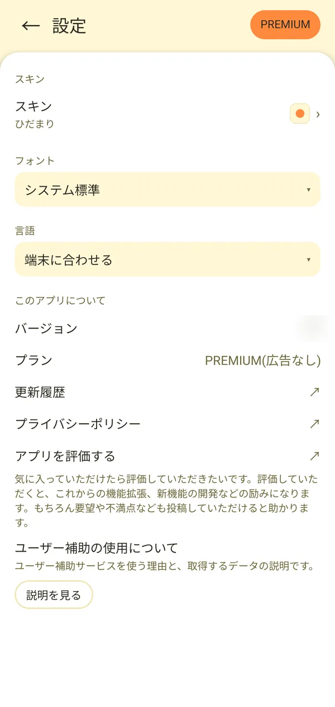
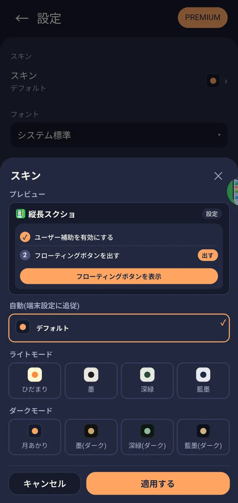

🎯 この章でできること
ホーム画面の右上の「設定」から、見た目や言語を変えられます。また、右上の「PREMIUM」から、広告をなくすPREMIUMに登録できます。
🛠️ 詳しい操作手順
スキン（配色）を変える
「設定」の「スキン」をタップすると、スキンを選ぶ画面が開きます。上のプレビューで見た目を確認しながら選び、「適用する」を押すと反映されます。やめるときは「キャンセル」を押します。
- デフォルト（自動）: 端末のライト／ダークの設定に追従します。
- ライトモード: ひだまり／墨／深緑／藍墨
- ダークモード: 月あかり／墨（ダーク）／深緑（ダーク）／藍墨（ダーク）


フォントを変える
「設定」の「フォント」の選択欄をタップして選びます。選べるのは、システム標準／きれい系／強め系／かわいい系です。
言語を変える
「設定」の「言語」の選択欄をタップして選びます。初期設定の「端末に合わせる」では、端末の言語で表示されます。アプリは12言語に対応しています。
更新履歴・プライバシーポリシー・評価・ユーザー補助の説明
「設定」の「このアプリについて」には、次の項目があります。
- バージョン: 今お使いのバージョンを確認できます。
- プラン: 現在のプラン（「無料（広告あり）」または「PREMIUM（広告なし）」）を表示します。
- 更新履歴: このアプリの更新内容のページを開きます。
- プライバシーポリシー: プライバシーポリシーのページを開きます。
- アプリを評価する: Google Playでアプリを評価するページを開きます。
- ユーザー補助の使用について →「説明を見る」: ユーザー補助サービスを使う理由と、取得するデータの説明を、いつでも読み返せます。
お住まいの地域によっては、「広告のプライバシー設定」のボタンも表示されます。
購入を復元する
機種変更や再インストールなどで、PREMIUMの状態が戻っていないときは、PREMIUMの案内画面の「購入を復元」を押してください。Google Playに有効な購入があれば、PREMIUMの状態に戻ります。有効な購入が見つからないときは、「復元できる購入がありません」と表示されます。
「購入を復元」は、まだ購入していない状態のときだけ表示されます。
❓ 設定・PREMIUMについてのよくある質問
Q PREMIUMに登録しないと、撮影の機能に制限はありますか？
いいえ。撮影・結合・切り取り・保存は、無料のまま制限なくお使いいただけます。PREMIUMで変わるのは、広告が表示されなくなることです。
Q PREMIUMを解約するにはどうしたらいいですか？
Google Playの「プロフィール → お支払いと定期購入 → 定期購入」から解約できます。
Q 機種変更したら、PREMIUMが無料の状態に戻っていました。
PREMIUMの案内画面の「購入を復元」を押してください。購入したGoogleアカウントで、有効な購入があれば元に戻ります。
Q ダークモードにしたいです。
「設定」の「スキン」で、ダークモードのスキン（月あかり／墨（ダーク）／深緑（ダーク）／藍墨（ダーク））を選ぶか、「デフォルト」を選んで端末のダークモードの設定に合わせてください。